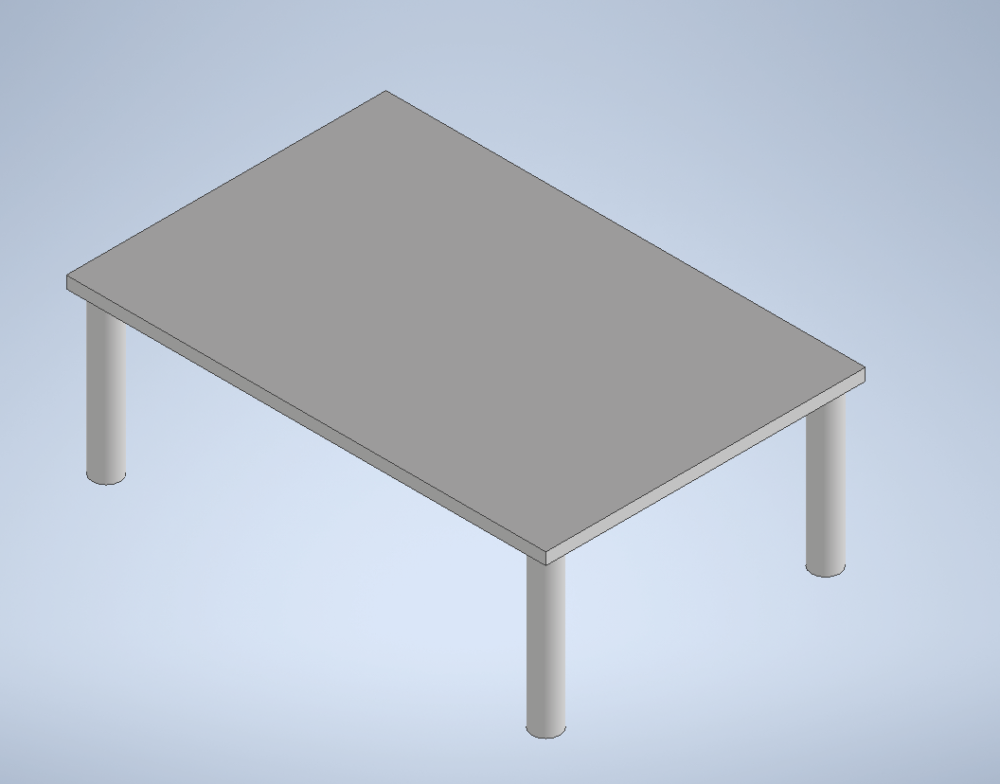
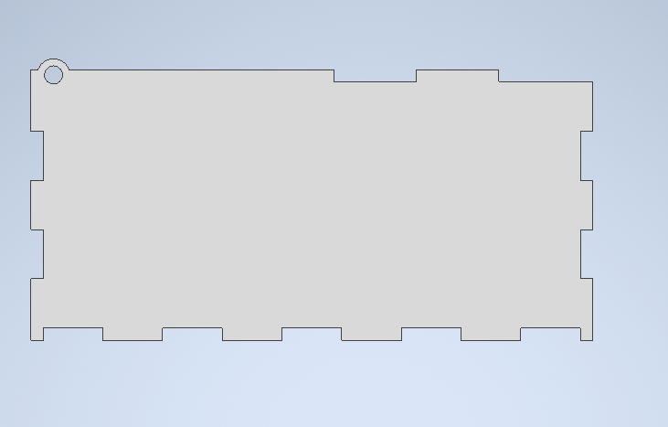
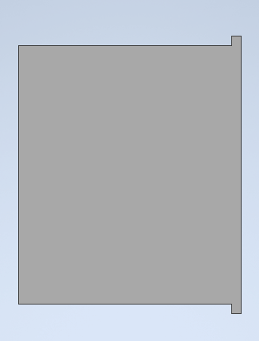
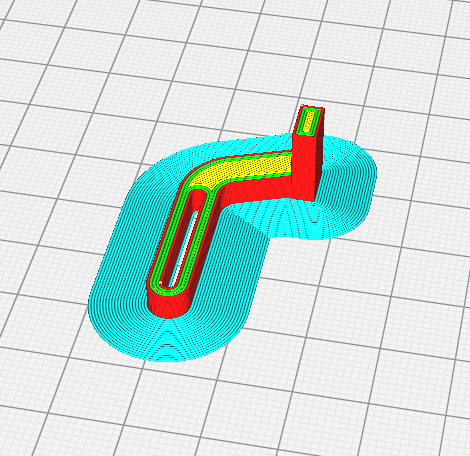

Final Project Design & Fabricate
CAD Model
For the final project, the original idea is to make a housing for the provided Arduino Uno board, then have the servo motor mounted on the top of the housing.
However, after some discussion with Mr Steven, I have opted to use the Arduino Nano instead to compact the design. The Nano is attached onto the breadboard mini which minimizes the space used.
Firstly, I designed a sitting so that the servo and breadboard could be mounted.
The sitting is designed in a shape of a table, so that the external battery pack could be stored under it, and the two servos could be mounted under it.

For the servo, 2 different arm attachments were designed. One which raises the lid and one which pushed the rocker switch.
Then, an external cover is made. The external box is made with tessellating patterns in the form of jigsaw male to female formation, for easy assembly and alignment.

The walls of the box contains a hole for the lid to pivot on, where the lid would be procked up by the servo arm attached.

The back panel of the box does not have a jigsaw pattern on the top due to the back panel's role in closing the small gap at the back that could not be filled by the lid.

The top of the box has 2 panels, the lid and the switch panel. The switch panel has a hole which would house the rocker switch.

The lid has a small 1mm gap behind the back panel to allow rotational movements by the lid. If the lid were to be of exact fitting to the gap between the back panel and the side of the switch panel, it would not be able to turn.

Another wall has a rectangular cut out in the side. This is made to mount the on off switch at the side of the box.

3D printing
For the table, the settings used were:
Failed print of the table due to bad settings which caused the piece to warped on one end.

Failed print of the table that is due to lack of adhesion between layers.

Failed print of the table that is due to poor infill setting of gyroid pattern and 10% infill. This caused the legs of the table to be quite hollow and thus brittle.

An attempted remedy was to use super glue to join back the snapped parts, but to no avail it still broke. Failed print of the table that is due to lack of adhesion between layers.
.jpg)
.jpg)
.jpg)
Sucessful final print of the table

For the 2 servo arms, the settings used were:
Failed original print prototype:

Failed print prototype with 'T' shaped contact point:

Sucessful final print prototype with 'L' shaped contact point:

Final print of lid arm:

Laser Cutting
For laser cutting the boxes, the individual faces of the model were exported to relase 12 .dxf file format.
This is then converted to 2007 .dxf file format with LibreCAD.
After that, the drawing file is exported to InkScape to be converted to .svg file format.
Finally, this .SVG file format is imported into Corel Draw which is converted to GCode for the laser cutter to read and cut.

Process of laser cutting:
However after laser cutting, the holes on the wall for which the lid's notch sits in to rotate is too thin, thus broke easily.

Therefore, the thickness of the piece around the hole was increased,so it would not break easily.

Assembly
Firstly, the breadboards with circuits and battery tray were mounted on the table.Then, the table is secured on the base of the outer box.
.jpg)
After that, the rocker switch is mounted on the switch panel which was glued on the back panel. The rocker switch is mounted on one side and bolted tight with a nut from the top.
Following that, the slider switch was friction fitted on the side of the panel of the box.
Later on, the box is assembled together, with the notches on the lid fitting in the holes on the top of the walls.

Next, the 3D printed servo arms are attached onto the arm of the servo with screws and super glue.

Finally, the servos are secured down onto the table top.

Note that the wall with the slider switch is not glued on due to needing to access the Nano board for code implementation.
Final View


Files
CAD Inventor Assembly File
Scalarble Vector Graphics file 1
{kind=link}
Scalarble Vector Graphics file 2
{kind=link}